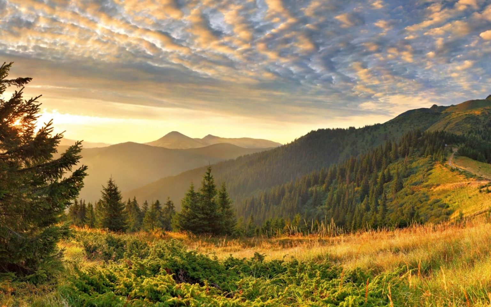
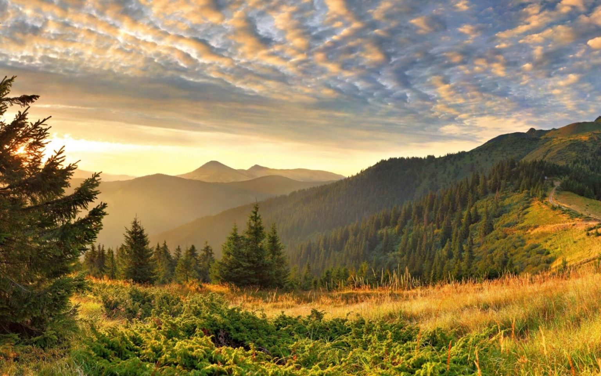

ОЗЕРО СИНЕВИР
Справжня родзинка Карпат, і, безумовно, найкрасивіше озеро у всій країні, Синевир вартий того, щоб відправитися в тури вихідного дня з Києва по Україні, і поїхати саме сюди - в один з найкрасивіших регіонів Закарпаття - Міжгірщину. Природа в околицях цього чуда просто приголомшливо, первісно красива, а розташований неподалік Національний парк Синевир - просто відмінне місце для прогулянок і рафтингу на швидких річках Чорна річка і Теребля.